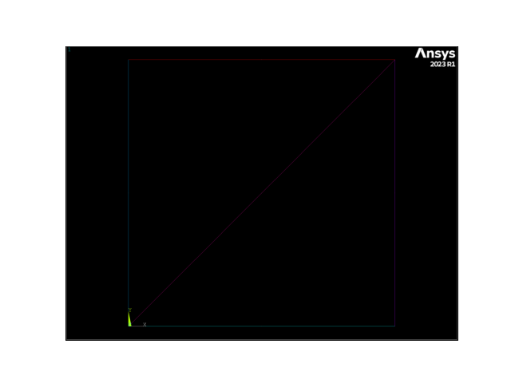

Note
Go to the end to download the full example code
Lines#
本例演示如何使用“线”命令创建基本几何体。
import numpy as np
from ansys.mapdl.core import launch_mapdl
# start MAPDL and enter the pre-processing routine
mapdl = launch_mapdl()
mapdl.clear()
mapdl.prep7()
print(mapdl)
Product: Ansys Mechanical Enterprise
MAPDL Version: 23.1
ansys.mapdl Version: 0.67.0
APDL Command: L#
在两个关键点 (0, 0, 0) 和 (1, 0, 0) 之间创建一条直线
1
APDL Command: LARC#
在 (0, 0, 0) 和 (1, 1, 0) 之间画一条曲率半径为 2 的圆弧。

APDL Command: L2ANG#
创建两个圆，并用一条线将它们连接起来。绘制结果。
APDL Command: L2TAN#
创建两条圆弧，并用样条曲线将它们连接起来。绘制结果。
mapdl.clear()
mapdl.prep7()
k0 = mapdl.k("", 0, 0, 0)
k1 = mapdl.k("", 0, 0, 1)
k2 = mapdl.k("", -1.5, 1.5, 0)
k3 = mapdl.k("", -1.5, 1.5, 1)
carc0 = mapdl.circle(k0, 1, k1, arc=90)
carc1 = mapdl.circle(k2, 1, k3, arc=90)
lnum = mapdl.l2tan(1, 2)
mapdl.lplot(vtk=False)
mapdl.lplot(background="w", color="k", line_width=5, cpos="xy")

APDL Command: LANG#
从 (0, 0, 0) 到 (1, 0, 0) 的直线与 (1, 1, 1) 的关键点成 60 度角。绘制结果图。
APDL Command: LAREA#
在正方形的两个角之间生成一条直线。
APDL Command: LCOMB#
创建两条线并将它们组合起来。
APDL Command: LDIV#
创建一条线并将其分成 5 段。

APDL Command: LEXTND#
创建一个圆弧，并在其中一个关键点上进行延伸。

APDL Command: LFILLT#
创建两条直角相交线，并在它们之间添加圆角。
APDL Command: LTAN#
创建一条圆弧，并在圆弧末端生成一条指向新关键点的切线样条。
APDL Command: SPLINE#
通过 5 个关键点生成分段样条曲线。
APDL Command: BSPLIN#
根据一系列关键点的样条拟合生成一条直线。
通过 (0, 0, 0) 、 (0, 1, 0) 和 (1, 2, 0) 生成
这与 “spline” 方法不同，因为它创建一条直线而不是多条直线。
Line IDs#
返回一个线条 ID 的数组
array([1])
Line Geometry#
获取包含线条的 VTK MultiBlock 。该 VTK 网格可以保存或绘制。更多信息，请参阅 Pyvista 文档 。
lines = mapdl.geometry.lines
lines
Line Selection#
有两种选择线的方法，一种是旧的 “传统” 风格，另一种是新的风格。对于那些熟悉现有 MAPDL 命令的人来说，旧式命令很有价值，而新式命令则适用于以 pythonic 方式选择线条。
此示例生成一系列随机线条并选择它们
mapdl.clear()
mapdl.prep7()
def generate_random_line():
k0 = mapdl.k("", *np.random.random(3))
k1 = mapdl.k("", *np.random.random(3))
mapdl.l(k0, k1)
# create 20 random lines
for _ in range(20):
generate_random_line()
# Print the line numbers
print(mapdl.geometry.lnum)
[ 1 2 3 4 5 6 7 8 9 10 11 12 13 14 15 16 17 18 19 20]
使用旧式命令每隔一个选择。
mapdl.ksel("S", "KP", "", 1, 20, 2)
print(mapdl.geometry.lnum)
[ 1 2 3 4 5 6 7 8 9 10 11 12 13 14 15 16 17 18 19 20]
用新式命令每隔一个选择。
请注意，在 MAPDL 中，Item ID 以 1 为基础，而 Python 范围以 0 为基础。
mapdl.geometry.line_select(range(1, 21, 2))
print(mapdl.geometry.lnum)
[ 1 3 5 7 9 11 13 15 17 19]
从列表中选择线
请注意，如果您想查看所选内容，可以 return_selected 。这在从现有区域重新选择时非常有用。
注意，这里也可以使用 numpy 数组。
[ 1 5 10 20]
APDL Command: LPLOT#
在显示关键点编号的同时绘制彩色线条。
所有常见的绘图方法都有多种绘图选项。
mapdl.lplot(
show_keypoint_numbering=True,
color_lines=True,
show_line_numbering=False,
background="w",
show_bounds=True,
line_width=5,
cpos="xy",
font_size=26,
)
Stop mapdl#
mapdl.exit()
Total running time of the script: (0 minutes 14.309 seconds)